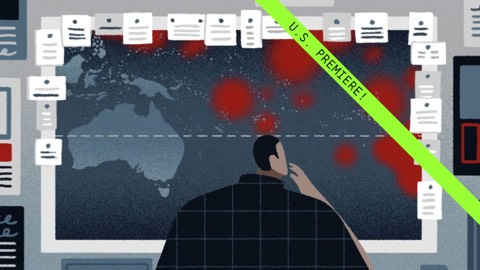
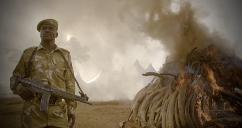

Environment & climate
Pollution, climate change, land, water and wildlife.
7 films · 2 sessions · 15 people
Often together with: War, conflict & the militaryRace & civil rightsAfricaLegal & safety for reportersChildren & educationReligion
Films

Rhapsody on the Outlaw OceanIan Urbina2026 · 61 min- Short Strand: Against the GrainSteven Leckart · Maia Wikler2026
 The Sludge WarGalassia Grassetto2026 · 80 min
The Sludge WarGalassia Grassetto2026 · 80 min Wild EastMaia Wikler2026 · 39 min
Wild EastMaia Wikler2026 · 39 min Trade SecretAbraham Joffe2025 · 98 min
Trade SecretAbraham Joffe2025 · 98 min- In Dry WaterKevin Clancy2019 · 14 min

The Ivory GameKief Davidson, Richard Ladkani2016 · 116 min
Sessions
- 2018 · Fri Oct 12 · 4:15 PMConversationClosing Conversation: Journeys Across the Abyss in Print and ScreenJames Longley, Shannon Service, Janet Reitman
- 2018 · Fri Oct 12 · 4:15pmPanel · DX²Journeys Across the AbyssShannon Service, Janet Reitman, James Longley
People most involved
 Abraham JoffePanelist, filmmaker · 2025
Abraham JoffePanelist, filmmaker · 2025 Costas ChristPanelist, journalists behind the film · 2025
Costas ChristPanelist, journalists behind the film · 2025- James LongleyPanelist, filmmaker · 2018
- Shannon ServicePanelist, filmmaker · 2018
- Kief DavidsonFilmmaker · 2016
- Richard LadkaniFilmmaker · 2016

 David E. GuggenheimModerator · 2025
David E. GuggenheimModerator · 2025
 Steven Leckart · Maia WiklerFilmmaker · 2026
Steven Leckart · Maia WiklerFilmmaker · 2026 Galassia GrassettoFilmmaker · 2026
Galassia GrassettoFilmmaker · 2026 Maia WiklerFilmmaker · 2026
Maia WiklerFilmmaker · 2026